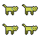

The purpose of this page is to you all some insight and seek peeks into my upcoming projects. It is a much more informal page where I can share my ideas about different games and possible future projects. All information under any game is subject to change at any time. Projects can be postponed or canceled altogether. The order of the page shows which games are closer to being released.

The game is going to be an arcade-like game where you play as a dog’s immune system. Your job is to keep the dog healthy by fighting off viruses. The game will be a fairly simple game in terms of gameplay mechanics. It will focus more on telling a bit of a story, which for obvious reasons, I cannot share now what will happen. It, however, is based on the events of a real dog. The game will also not be a very long game. Maybe around an hour long.
This game will be an action RPG where you play as a young man who has found himself alone in this mysterious temple. He finds out he has the power to manipulate light. Along his journey, he finds help from a young witch, a cat with unique powers, and a mini little robot. This group of 4 will try to take down a rogue robot that has gained intelligence and seeks to take revenge. The combat will be a turn-based system where you can have all four of your characters attack based on their speed stats. This game will be a much longer game and can be set up for a sequel.

Hello There! I’m Ben Painter and I’m the main programmer and producer of The Hippo Zoo. I’m a current BYUi student majoring in software engineering. My goals are to continue to work on this project and to continue this ever-changing story of this gaming universe. I first found my love for game development all the way back in middle school when a friend showed me that you were able to program a basic game onto a graphing calculator. Ever since that moment, I’ve always wanted to develop and create new games. A few other interesting facts about me is that I was a former cross country runner, I have two dogs at home, and I’m somewhat fluent in Dutch.